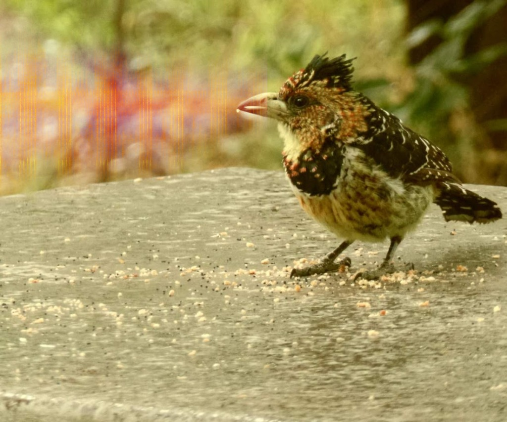

Behind the scenes of a Zindi Contest

User comments
Ever wondered what goes into launching a data science competition? If so, this post is for you. I spent the last few days working on the Fowl Escapades: Southern African Bird Call Audio Identification Challenge on Zindi, and thought it would be fun to take you behind the scenes a little to show how it all came together.
Step 1: Inspiration
Many competitions spring from an existing problem in need of a solution. For example, you may want a way to predict when your delivery will arrive based on weather, traffic conditions and the route your driver will take. In cases like this, an organization will reach out to Zindi with this problem statement, and move to stage 2 to see if it’s a viable competition idea. But this isn’t the only way competitions are born!
Sometimes, we find a cool dataset that naturally lends itself to answering an interesting problem. Sometimes we start with an interesting problem, and go looking for data that could help find answers. And occasionally, we start with nothing but a passing question at the end of a meeting: ‘does anyone have any other competition ideas?’. This was the case here.
I had been wanting to try my hand at something involving audio data. Since I happen to be an avid birder, I thought automatic birdsong identification would be an interesting topic. For this to work, we’d need bird calls - lot’s of them. Fortunately, after a bit of searching I found the star of this competition: https://www.xeno-canto.org/. Hundreds of thousands of calls from all over the world! A competition idea was born.
Step 2: Show me the data
To run a competition, you need some data (unless you’re going to ask the participants to find it for themselves!). This must:
- Be shareable. Anything confidential needs to be masked or removed, and you either need to own the data or have permission to use it. For the birdsong challenge, we used data that had CC licences but we still made sure to get permission from xeno-canto and check that we’re following all the licence terms (such as attribution and non-modification).
- Be readable. This means no proprietary formats, variable definitions, sensible column names, and ideally a guide for reading in the data.
- Be manageable. Some datasets are HUGE! It’s possible to organize contests around big datasets, but it’s worth thinking about how you expect participants to interact with the data. Remember - not everyone has fast internet or free storage.
- Be useful. This isn’t always easy to judge, which is why doing data exploration and building a baseline model early on is important. But ideally, the data has some predictive power for the thing you’re trying to model!
Visualizing birdsongs
By the time a dataset is released as part of a competition, it’s usually been through several stages of preparation. Let’s use the birdsong example and look at a few of there steps.
- Collection: For an organization, this would be an ongoing process. In our example case, this meant scraping the website for files that met our criteria (Southern African birds) and then downloading tens of thousands of mp3 files.
- Cleaning: A catch-all term for getting the data into a more usable form. This could be removing unnecessary data, getting rid of corrupted files, combining data from different sources…
- Splitting and Masking: We picked the top 40 species with the most example calls, and then split the files for each species into train and test sets, with 33% of the data kept for the test set. Since the file names often showed the bird name, we used
''.join(random.choices(string.ascii_uppercase + string.digits, k=6))to generate random IDs. However you approach things, you’ll need to make sure that the answers aren’t deducible from the way you organize things (no sorting by bird species for the test set!) - Checking (and re-checking, and re-checking): Making sure everything is in order before launch is vital - nothing is worse than trying to fix a problem with the data after people have started working on your competition! In the checking process I discovered that some mp3s had failed to download properly, and others were actually .wav files with .mp3 as the name. Luckily, I noticed this in time and could code up a fix before we went live.
Many of these steps are the same when approaching a data science project for your own work. It’s still important to clean and check the data before launching into the modelling process, and masking is useful if you’ll need to share results or experiments without necessarily sharing all your secret info.
Step 3: Getting ready for launch
Aside from getting the data ready, there are all sorts of extra little steps required to arrive at something you’re happy to share with the world. An incomplete list of TODOs for our latest launch:
- Decide on a scoring metric. This will be informed by the type of problem you’re giving to participants. In this case, we were torn between accuracy and log loss, and ended up going with the latter. For other cases (eg imbalanced data), there are a host of metrics. Here’s a guide: https://machinelearningmastery.com/tour-of-evaluation-metrics-for-imbalanced-classification/
- Put together an introduction and data description. What problem are we solving? What does the solution need to do? What does the training data look like? This will likely involve making some visualizations, doing a bit of research, finding some cool images to go with your topic…
- Social media. This isn’t part of my job, but I gather that there is all sorts of planning for how to let people know about the cool new thing we’re putting out into the world :)
- Tutorials. Not essential, but I feel that giving participants a way to get started lowers the barriers to entry and helps to get more novices into the field. Which is why, as is becoming my habit, I put together a starter notebook to share as soon as the contest launches.
A confusion matrix - one way to quickly see how well a classification algorithm is working. (from the starter notebook)
- Baseline/benchmark. This is something I like to do as early as possible in the process. I’ll grab the data, do the minimal cleaning required, run it through some of my favorite models and see how things go. This is nice in that it gives us an idea of what a ‘good’ score is, and whether the challenge is even doable. When a client is involved, this is especially useful for convincing them that a competition is a good idea - if I can get something that’s almost good enough, imagine what hundreds of people working for prize money will come up with! If there’s interest in my approach for a quick baseline, let me know and I may do a post about it.
- Names, cover images, did you check the data???, looking at cool birds, teaser posts on twitter, frantic scrambles to upload files on bad internet, overlaying a sonogram on one of my bird photos… All sorts of fun :)
Fine-tuning the benchmark model
I could add lots more. I’ve worked on quite a few contests with the Zindi team, but usually I’m just part of the data cleaning and modelling steps. I’ve had such a ball moving this one from start to finish alongside the rest of the team, and I really appreciate all the hard work they do to keep us DS peeps entertained!
Try it yourself!
I hope this has been interesting. As I said, this whole process has been a blast. So if you’re sitting on some data, or know of a cool dataset, why not reach out and host a competition? You might even convince them to let you name it something almost as fun as ‘Fowl Escapades’. :)